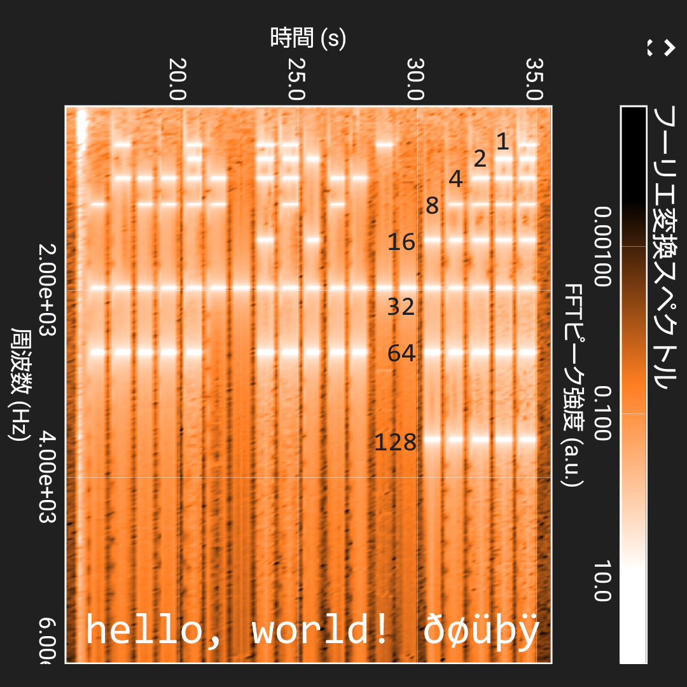

Input half-length text you want to listen to.
speed:(再生速度)
SURROGATE PAIR NOT DETECTED
[heard letter appears here]
[confirmed letter appears here]
threshold:(マイク感度)
analyser.fftSize:(周波数解析精度)
動作デモ 「hello, world! ðøüþÿ」
(スマホ用アプリケーション phyphoxにてアナライズ)

文字をUnicodeとして読み取り、1の位から周波数を：
440 594 802 1083 1461 1973 2664 3596
Hzに割り振り再生しています
白くなっている部分はその周波数の音が大きかった時間を表しています